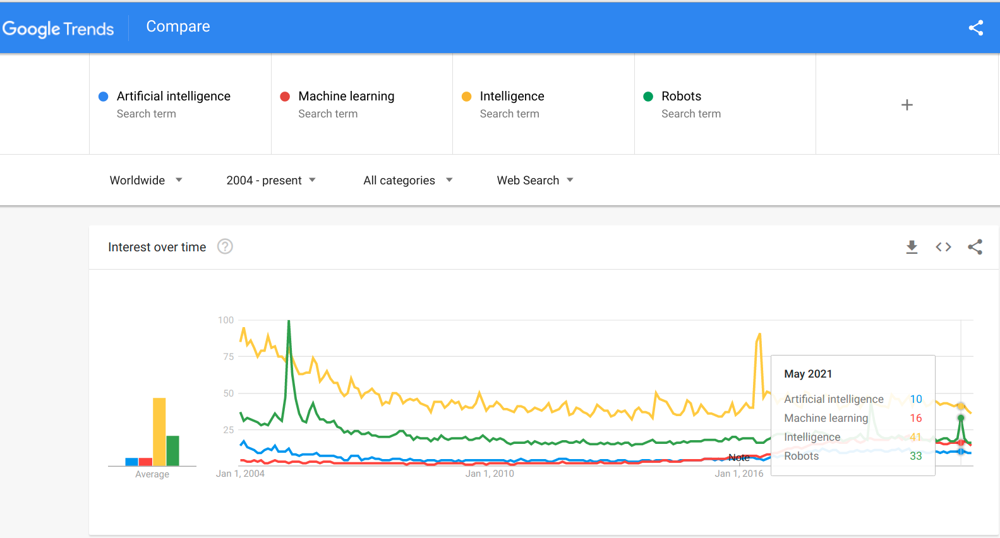

What is AI?
Seminar on Artificial Intelligence Fall 2023
Marcus Birkenkrahe
Created: 2023-08-24 Thu 22:05
What're you going to learn?
- What is intelligence?
- Different approaches to AI
- The standard model of AI
- Bounded rationality
- The Value alignment problem
- Asimov's Robot Laws
- What's next?
What is intelligence?

Search patterns

Group work

- Get together in groups of 2-3
- Define INTELLIGENCE (5')
- Define ARTIFICIAL INTELLIGENCE (5')
- Briefly present your results (10')
Different approaches to AI

Which fields of inquiry (= disciplines) to use?
Fields of systematic inquiry
- Language
- Philosophy
- Science
- History
Fundamental questions

- Should we focus on humans?
- Should we focus on machines?
Four approaches
| THOUGHT / LOGIC | BEHAVIOR / ACTION | |
|---|---|---|
| HUMANITY | Cognitive modeling | Turing Test |
| RATIONALITY | Laws of Thought | Rational Agents |
Four scenarios

Acting humanly ("Turing test" approach)
| Natural language processing |
| Knowledge representation |
| Automated reasoning |
| Machine learning |
| Computer vision |
| Robotics |
Thinking humanly ("cognitive modeling" approach)
| Introspection |
| Psychological experiments |
| Brain imaging |
| Cognitive science |
| Algorithms |
Thinking rationally ("laws of thought" approach)
| Syllogistic reasoning |
| Logic |
| Expert systems |
| Uncertainty |
| Probability |
Acting rationally ("rational agent" approach)
| Combination approach |
| Constructivist |
| Doing the right thing |
| Standard model |
| Control theory |
Major issues

- Bounded Rationality
- Value alignment problem
Bounded rationality

Image: Bakopoulos, 1985
AIMA: "For perfect rationality, the computational demands are just too high."
Value alignment

Image: The Mechanical Turk
AIMA: "The values or objectives put into the machine must be aligned with those of the human."
Pros and cons
- Get together in groups of 2-3
- Each group covers one approach
- List pros and cons of your approach
- Put your results on the Kanban board
Asimov's robot laws

Image: cover of "I, Robot" by Isaac Asimov (1940)
Which approach fits these laws best?
- A robot may not injure a human being or, through inaction, allow a human being to come to harm.
- A robot must obey the orders given it by human beings except where such orders would conflict with the First Law.
- A robot must protect its own existence as long as such protection does not conflict with the First or Second Law.
What's next?

- Scientific foundations of AI
- History of AI
Any questions?

References
Bakopoulos, J. Yannis, "Toward a More Precise Concept of Information Technology" (1985). ICIS 1985 Proceedings. 4. http://aisel.aisnet.org/icis1985/4